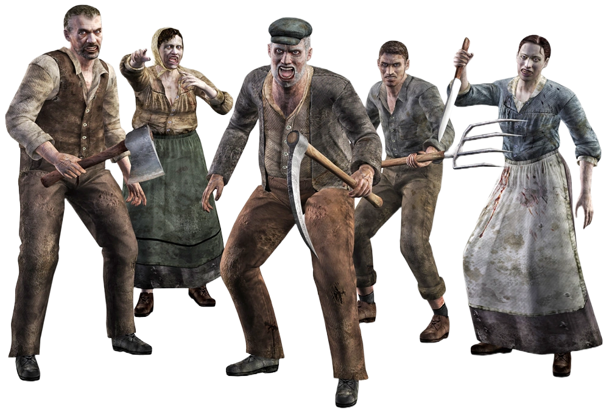
被疫生獸所寄生的村民,雖然還保有日常生活、對話等意識,但是卻彷彿被什麼所控制般,對於外來者還不客氣的使用鐮刀、斧頭、耙子、菜刀、炸藥、火把,或是徒手攻擊。
在行動上不但會閃躲攻擊,還會設置捕獸夾等陷阱。
遊戲中第二章以後,被打倒的村民體內的疫生獸還有可能會破頭而出,疫生獸的攻擊力比村民還要可怕。
對付方法：射擊他們的腳部,會使他們失去平衡而單腳跪下或是跌倒；射擊手部使他們手中武器掉落；射擊頭部有機率一擊必殺或是失去平衡,可在失去平衡時接近使用體技攻擊。
梯子戰法,在爬梯上等待村民爬上來時以小刀攻擊使其墜落,反覆即可毫髮無傷擊倒,唯需注意後方的安全。
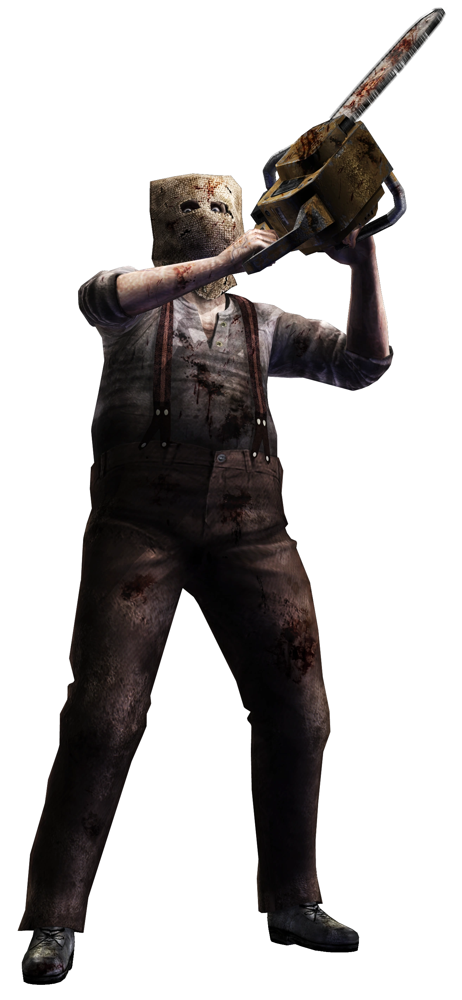
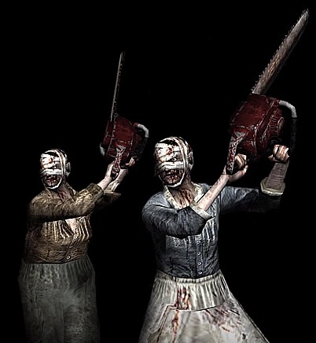
被疫生獸所寄生的村民,雖然還保有日常生活、對話等意識,但是卻彷彿被什麼所控制般,對於外來者還不客氣的使用鐮刀、斧頭、耙子、菜刀、炸藥、火把,或是徒手攻擊。
在行動上不但會閃躲攻擊,還會設置捕獸夾等陷阱。
遊戲中第二章以後,被打倒的村民體內的疫生獸還有可能會破頭而出,疫生獸的攻擊力比村民還要可怕。
對付方法：射擊他們的腳部,會使他們失去平衡而單腳跪下或是跌倒；射擊手部使他們手中武器掉落；射擊頭部
有機率一擊必殺或是失去平衡,可在失去平衡時接近使用體技攻擊。
梯子戰法,在爬梯上等待村民爬上來時以小刀攻擊使其墜落,反覆即可毫髮無傷擊倒,唯需注意後方的安全。

由山椒魚被疫生獸寄生而成,佔據村落的湖泊為王,湖面有什麼動靜都清清楚楚。
牠的大嘴一口就可以把獵物吞掉,造成即死攻擊。
對付方法：與湖之主的戰鬥重點是不要掉落水中,只要不落水,就可無
傷通過,所以閃避浮木應該比攻擊更優先,只要牠潛入水中
,就操控小船往邊邊靠,避免牠浮出時翻船。
使用魚叉攻給予一定傷害,牠會從遠方張開大口逼近,趁此時朝牠口中疫生獸攻擊！
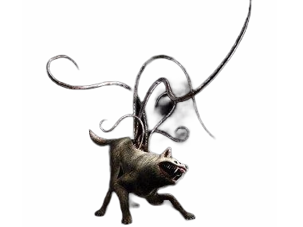
被疫生獸寄生的狗,除了嚇人的獠牙,背上還會爆出疫生獸的觸手,觸手長又靈活,常團體行動。
對付方法：由於觸手攻擊範圍很廣,加上集體行動的特性,在面對康米洛斯犬時,最好不要讓牠們有靠近的機會,太接近時使用散彈槍,可以暫時將牠們打倒在地,不過牠們起身速度很快,要抓緊攻擊時機。

擁有一般常人4倍的大小,龐大的體積和極大的力氣,光這兩點就能讓敵人畏懼。
除了用手和腳攻擊,也會使用像是樹木、石頭來當作武器攻擊敵人。
對付方法：力氣很大的巨人,相對地相當不靈活,在他逼近時可以從他雙腳間逃開。
給他一定傷害之後,背後會露出疫生獸,可以靠近用小刀攻擊,或是用槍械來攻擊。
打倒他時,如果跟他距離太近,就必須使用指示鍵躲避,以免被壓到。
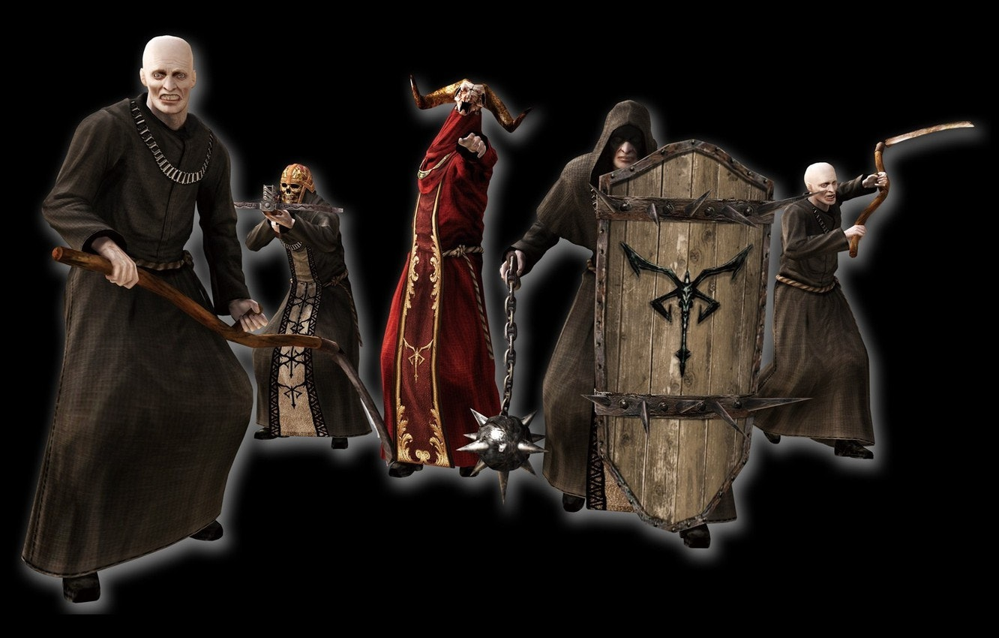
光明教導團的教徒們,穿紅色教服的邪教徒比黑色教服的邪教徒地位高,另外帶有羊角面具的紅衣邪教徒地位更高,常常是一群教徒的領導。
邪教徒雖然被疫生獸寄生,卻仍有聰明的思考,會使用各式各樣的武器,例如投石機、十字弓、盾牌等等。
爆頭時可能會出現的疫生獸也有不同種類,除了類似村民的那一種,還有八腳蜘蛛型的疫生獸,打倒後會從邪教徒的身體逃離。
對付方法：基本方法皆與對付村民相同,持十字弓的邪教徒應該優先解決,另外持有盾牌的邪教徒會比較難攻破,散彈槍是個不錯的攻破武器,不然就攻擊腳部。


受到攻擊的村長,利用異常的能力進化成了這個模樣,昆蟲般的脊椎可以自由伸縮,但不知是否因為身體過長導致行動緩慢。
此型態受到一定攻擊後,脊椎以下會脫落,利用背後的觸手來移動,吊掛在樑柱之間,或是像蜘蛛在地上爬。
對付方法：第一個進化型態由於行動慢,加上伸縮脊椎時會發出聲音,
因此只要利用戰鬥場地的二樓,在他伸長脊椎時離開他的攻
擊範圍並反擊即可。
第二進化型態他的動作忽然變快,會朝玩家這過來進行近距離攻擊,所以保持距離,就是最好的方法了。

頭上戴著金屬的頭盔,已經完全失去視力,卻擁有良好的聽力,依據聲音所定敵人位置,再毫不客氣地使用雙手上的巨大鐵爪攻擊,弱點在於背上外露的疫生獸。
對付方法：製造聲響來引起他的注意,例如射擊鐘和花瓶之類,或是引誘他攻擊到牆壁,可以使他的爪子陷入牆中一陣子,主要當然還是製造機會瞄準他背後的疫生獸,建議使用來福槍或地雷發射器。
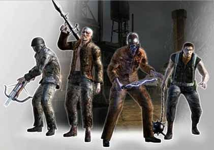
士兵們拿著由教團提供的各式武器,包含流星槌、電擊棒、斧頭、十字弓、炸藥,甚至還有火箭砲,也會利用盾牌和旋轉機關槍,是攻擊力不錯的小嘍囉。受到攻擊後從頭部外露出來的寄生獸,有時會使出一擊必殺的絕招。
對付方法：基本上和村民相同,但是因為士兵有更多元的武器,同時也常會伴隨比較強力的士兵（如手拿流星槌、長得很粗壯的盔甲士兵）或是鏈砲兵,遇到大群敵人時,可以選擇必較有利的地形來反擊。對於威脅性高的火箭砲、寄生獸,還是要優先對付。
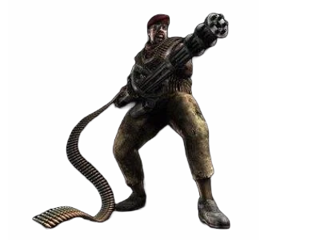
鏈砲兵在正式遊戲中只有少數幾個特定的地方會出現,手上拿著強力的旋轉機關槍,身上背著射不完的子彈,一旦遭到他的連射,恐怕撐不到
幾秒鐘就要一命嗚呼的可怕對手。
對付方法：他身上的子彈成了他的防護衣,因此攻擊身體往往會被擋下來,對自己槍法有自信的玩家可以針對他的頭部來攻擊。
若是太靠近他就會被他用槍直接揮擊。他的攻擊有週期性,趁空檔射擊,被瞄上又沒地方躲時,就用閃光彈中斷！
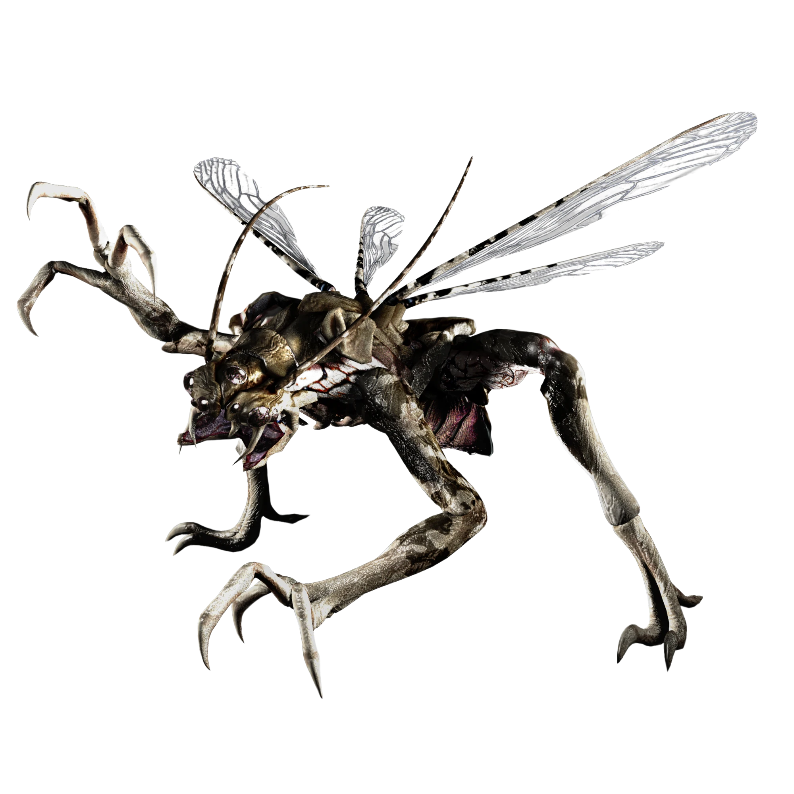
在教團的陰謀下用人體和疫生獸做實驗所製作出來的,有的會飛,有的則會隱形,在遠處所吐出的酸液能使敵人立即死亡。
對付方法：昆蟲人通常集體行動,在空中時防禦力較差,在地面接近時,就使用腳踢來打退牠們。
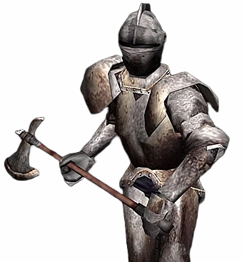
原本應該是沒有生命的鎧甲,卻因為被寄生獸寄生而活動了起來。
走起路來會發出鏗鏗鏘鏘的聲響,拿著厚重的劍笨重地移動,攻擊力也沒有想像中的高,必較麻煩的是受到一定攻擊後會露出寄生獸。
對付方法:Leon遇到的鎧甲兵是團體出現,由於鎧甲兵並不會思考,只會追,利用這個特性使出打帶跑戰術,使它們全部露出疫生獸後再用閃光彈解決。
Ashley遇到的鎧甲兵基本上不用理它們。
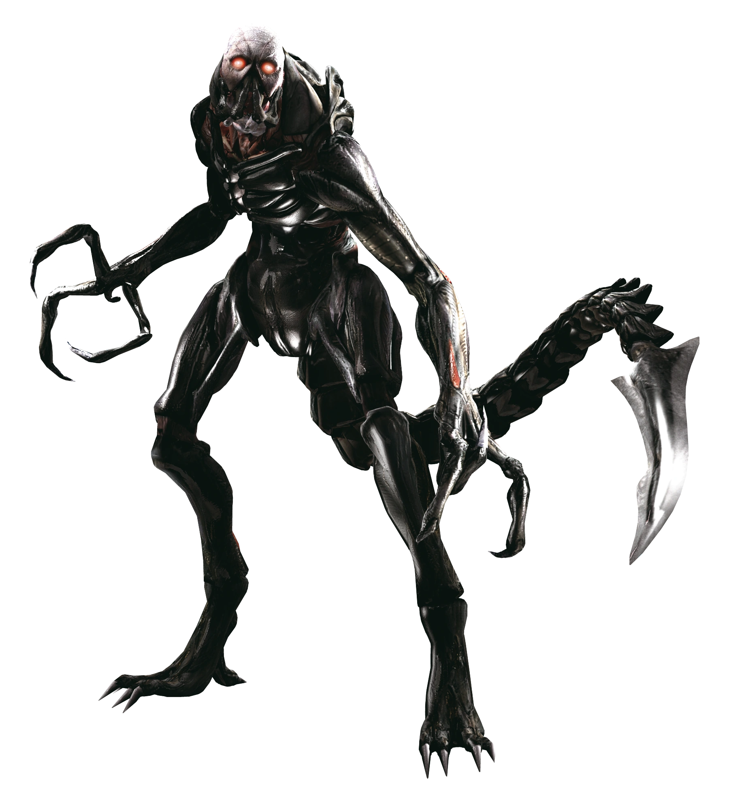
平時披著紅色的袍子待在Sazalar身邊,在教團中擔任執刑的工作。
擁有敏捷的身手、銳利的勾爪,以及有力的尾巴,對任何敵人都不手下留情。
對付方法：牠受到攻擊時,常常會躲避在天花板之上伺機出手,玩家必須隨時注意指示按鍵來閃躲牠的偷襲,打倒牠的重點還是在於紅色鋼瓶的使用時機,紅色鋼瓶會使他冰凍而暫時失去防禦力,玩家才能對他造成傷害。

真心崇信著教團的Salazar,最終也和疫生獸結合了,連同管家一起變成了這個模樣,橫擋在Leon面前阻止玩家前進。
對付方法：他會攻擊的部份有兩個,一個是長長的頭部,另外是左右兩側的觸手。
攻擊觸手可以讓觸手暫時縮回,攻擊頭部的眼睛可以讓中央的核心打開,Salazar就藏身在這裡,要打倒他,就是要攻擊Salazar!
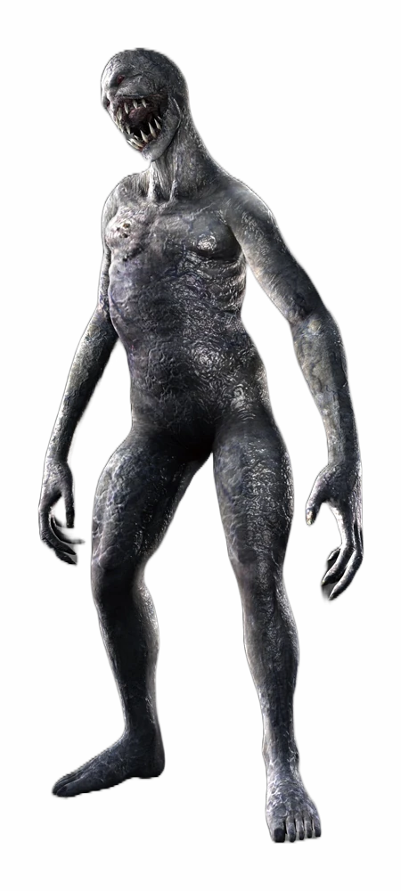
顧名思義,再生者擁有一定的再生能力,無論是打斷他的手腳、轟他的頭、把他肚子轟一個洞,牠都還是可以一步步逼近,對玩家攻擊。這是由於再生者並非被單一疫生獸寄生體寄生,牠的體內共有四個寄生體,供給牠再生的能力。
再生者的攻擊方式會將手臂伸長攻擊,或是用牙齒咬,當玩家把牠的腳打斷時,在腳再生之前,也可能會直接從地面彈起咬住玩家。
對付方法：使用裝備感溫狙擊鏡來福槍將他體內的四個寄生體打倒,是最直接且有效的方法,另外給予他一定程度的傷害也能將之打倒。
無論如何,保持距離戰鬥才是上上策。

鐵處女和再生者很類似,都擁有再生的能力,鐵處女體內共有五個寄生體,而且其中一個常常隱藏在背後,玩家無法從正面看到。
鐵處女除了伸長手臂的攻擊外,當與玩家距離接近時,會從身體各處突出長長的尖刺,一旦被刺中,受到的傷害很大,千萬不可貿然接近！
對付方法：攻擊方法基本上與再生者相同,若想攻擊隱藏在背後的寄生體,可以打斷牠的腳,使牠「撲」倒在地,因為牠並不會彈起來咬人,玩家可以趁牠再生前的短短時間找出寄生體,或將油桶在他後方引爆,有力地解決寄生體。也可以選擇給予他一定程度的傷害來打倒。
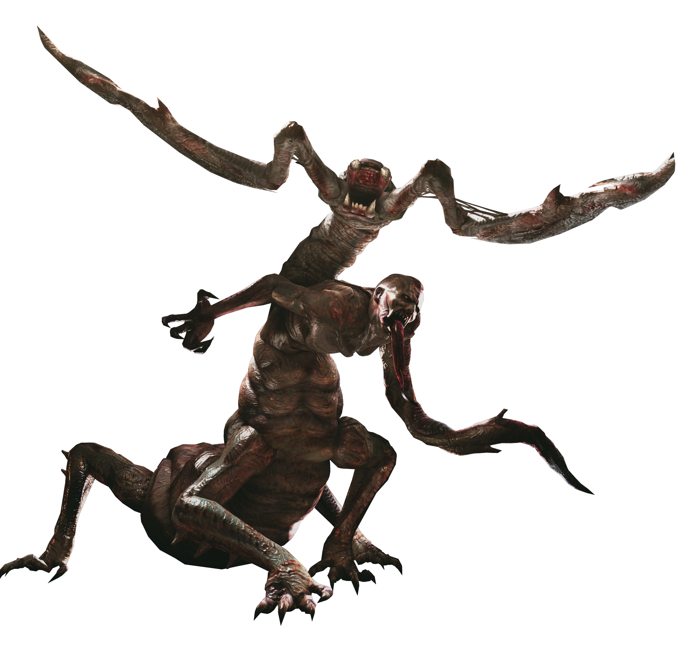
擁有變異能力,上天下地都難不倒牠,各種攻擊傷害都很大,尾巴上如鐮刀般銳利的鉗子會從地底進行攻擊,是否是人類被疫生獸寄生變異而成的呢？
對付方法：只要被牠攻擊到就會受到莫大的傷害,所以最好保持距離來應戰,利用油桶、柵門等物品阻止牠的追擊。
當牠潛身在地底時,依靠指示按鍵來躲避攻擊。
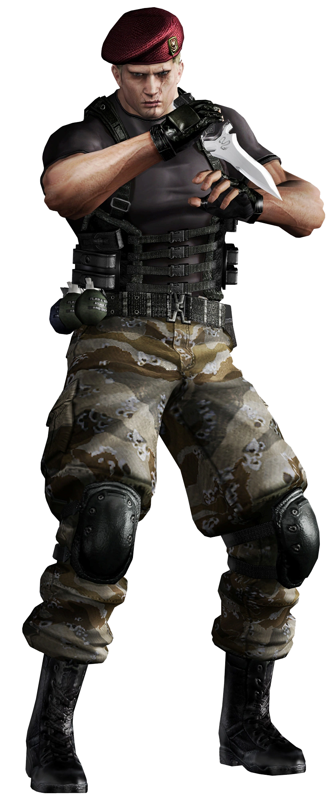

在還沒長出疫生獸手臂之前,Krauser會使用弓槍、手榴彈、機關槍來攻擊；近距離時,就使用小刀,要特別注意有複合按鍵指示時的小刀攻擊,如果沒避掉會受到強大傷害,常常會斃命。
當Krauser受到一定攻擊時,就會使用閃光彈逃跑。
Krauser在遊戲後半中,由於使用了疫生獸的力量,他左手長出的武器除了強力的攻擊力之外,也有100%的防禦力。
對付方法：變身前,玩家是無法把他確實殺死的,只能逼退他,若是附近有爬梯,爬上去後待在原地,Krauser會從下面直接跳到Leon前方,趁這個機會用小刀攻擊１～２次,然後快速轉身跳下,Krauser跟著跳下,再用小刀攻擊１～２次,快速轉身爬上。重複數次後,就可以輕鬆打退Krauser。
變身後,由於左手手臂是無敵的,不用浪費彈藥攻擊手臂。
其他部位雖然小刀的攻擊效果很好,但在Leon篇時機不容易抓,玩家可以自行嘗試。
Krauser衝過來時,使用武器攻擊他沒有防禦的腳部,只要受到一定傷害,Krauser就會跪下,此時頭部沒有遮蔽,要趕緊攻擊。
Krauser接近時,隨時注意使用複合按鍵躲避攻擊。Krauser速度很快,請捨棄使用射速很慢的武器。
Ada the Spy篇中與Krauser的對戰,因為場地是狹長型的,所以在Krauser近身攻擊時退後或使用複合按鍵躲避,然後抓緊空隙攻擊。
The Another Order篇中,Ada遇到受傷的Krauser,這裡使用小刀的時機比較好抓,可以盡量使用小刀來攻擊。

遊戲中的最終頭目,由Saddler變身而成的四腳怪物,除了四隻長腳都具有攻擊能力之外,他的觸手、尾巴都會對玩家造成傷害。
擁有智慧的Saddler,也會利用週遭的物品來攻擊玩家,當距離太遠時,即進行高空跳躍逼近,可觀察地面的影子判斷落下位置。